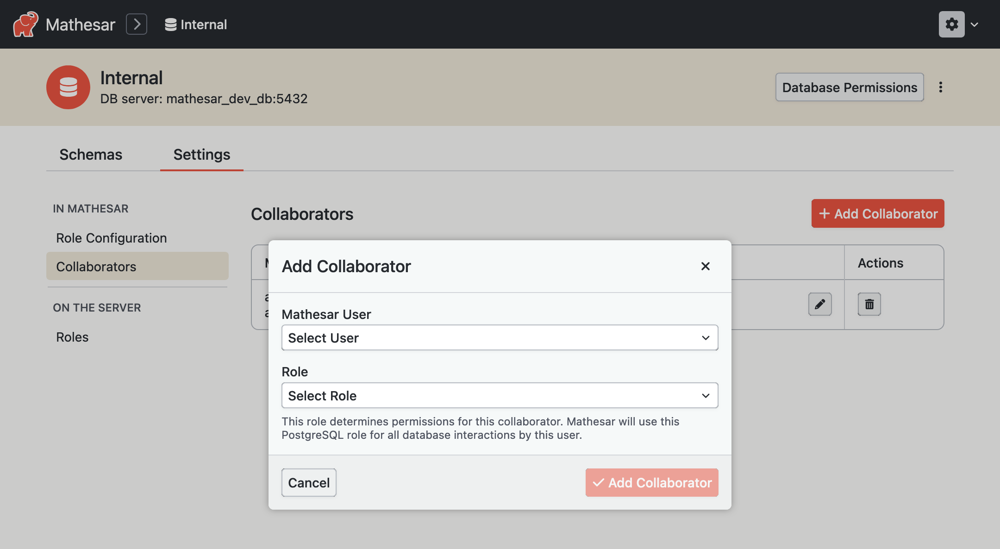
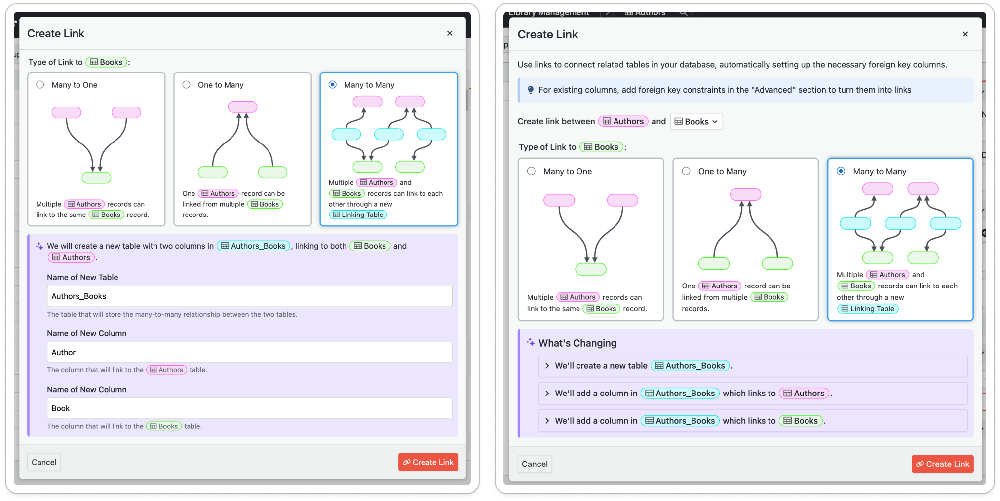

🧪 Mathesar 0.2.0-testing.1¶
Not a stable release
This is a testing build released with the goal of gathering feedback from our community. It has many known issues and is not recommended for production use.
Summary¶
Mathesar 0.2.0-testing.1 provides an early preview of improvements we plan to release in our beta version. We have a brand new access control system based entirely on PostgreSQL database permissions, and we’ve also made major improvements to the responsiveness of the Mathesar UI. We’ve also built out a new RPC API, and we’re deprecating our REST API in favor of it.
This page provides a comprehensive list of all changes in the release.
Installing 0.2.0-testing.1¶
You will need to create a new installation of Mathesar to use this version, which you can do via Docker Compose or from source.
We do not support upgrading from previous versions to 0.2.0-testing.1.
Improvements¶
Access control based on PostgreSQL roles and privileges¶
We have a brand new access control system based entirely on PostgreSQL database roles and privileges. Mathesar users must now be assigned a database role, and any operations performed by the user through the Mathesar UI will connect to the database using that role.

This gives Mathesar several new capabilities. Database administrators can set up access control directly on the database and use those roles in Mathesar. Mathesar also supports setting up PostgreSQL roles and privileges via the UI, including granular access control at the individual table level.
This replaces our previous access control system (which was enforced at the API layer, and only supported permissions at the database and schema levels). It also eliminates the need for Mathesar to use a database superuser for day-to-day operations.
More detailed documentation can be found in our User Guide under Permissions and Users.
- Initial permissions remodel #3626
- Implement RPC method for listing roles in server #3663
- Initial
database_setupRPC methods #3665 - Cast OID values to bigint in msar.get_roles #3667
- RPC methods for servers, collaborators #3684
- RPC methods for configured roles #3685
- Remove existing permissions logic on the frontend #3689
- Homepage changes for database connections #3710
- Homepage UI #3711
- Implement
database_privileges.list_directRPC method. #3750 - Implement
database_privileges.get_owner_oid_and_curr_role_db_privRPC method #3760 - Database page role configuration, collaborators, roles #3762
- Implement
roles.addRPC endpoint #3769 - Add
database_privileges.replace_for_rolesRPC method. #3781 - Add
schema_privileges.replace_for_rolesRPC method #3786 - Move DB page contexts to the route level #3789
- Add privilege information fields #3795
- Database permissions modal - ‘Share’ tab #3810
- Implement
transfer_ownershipfor schemas and tables #3833 - Implement permissions modal for schemas and tables #3836, #3838
- Allow setting owner at creation #3840
- Implement
roles.delete,databases.drop&databases.configured.disconnectRPC methods #3858 - Implement ‘Transfer ownership’ tabs #3859
- Permission checks in all pages, disconnect database option #3861
- Bugfix
get_current_rolewhen only one role exists #3869 - Grant appropriate permissions for
msar,__msarandmathesar_typestoPUBLIC#3881 - Filter databases for admin and standard users #3895
- Fix logic in
get_current_role#3922 - Fix quoting for role grant/revoke expressions #3931
Performance improvements and RPC API¶
We’ve made major improvements to the responsiveness of the Mathesar UI. Loading data and data entry should be much more snappy, and importing data into Mathsar is around 50 times faster. We’ve also eliminated the need to manually sync database schema changes to Mathesar, any DDL changes will be reflected in the UI automatically.
To achieve these performance benefits, we needed to overhaul our backend architecture and API. We have built out a new RPC API and our frontend UI now primarily uses that API. The RPC API has some documentation here, but should not be considered stable yet.
Most of our REST API endpoints are now deprecated and will be removed soon. The /users/ and /data-files/ endpoints remain in use.
- Connections RPC front end #3543
- Exception handler tests #3547
- Fix SQL syntax highlighting in VS code for SQL tests #3588
- Remove dead front end API client code to GET one schema #3589
- Implement
tables.deleteRPC method #3608 - Implement
schemas.deleteRPC method #3610 - Implement
tables.getRPC method #3612 - Implement
tables.addRPC method #3614 - Add
columns.patchRPC method #3615 - Add
columns.addRPC method #3616 - Implement
tables.patchRPC method #3618 - Implement
schemas.addRPC method #3620 - Implement
table.importRPC method #3623 - Implement
schemas.patchRPC method #3628 - Wire RPC methods to new models #3632
- Quoting refactor #3633
- Implement
tables.get_import_previewRPC method #3635 - Auto generate table name #3637
- Add
columns.metadata.listRPC method #3641 - Implement
tables.metadatalist&patchRPC method #3646 - Fix issue with removing comments on schemas #3649
- Drop old SQL function signature #3650
- Implement tables list and delete RPC methods #3651
- Columns meta RPC patch #3653
- Constraints RPC transition #3664
- Cast OIDs to bigint before putting in JSON #3666
- RPC implementation for
tables.list_joinable#3669 - Improve tables metadata #3672
- RPC implementation for
types.list#3676 - Add
records.listRPC method #3691 - RPC transition for explorations
listanddelete#3694 - Implement
explorations.runRPC method #3696 - Fix return type error when re-defining
get_constraints_for_tableSQL function #3698 - Fix Issues with
tables.patchRPC method #3699 - RPC records list filtering #3700
- Return empty array when schema has no tables #3702
- RPC function for column info with metadata #3703
- First steps of RPC implementation for table page #3704
- Add
records.searchRPC method #3708 - Wire up valid_target_type function to column lister #3709
- Alter column metadata fields #3717
- Add target_table_info in
tables.list_joinable'sresponse #3718 - Records grouping #3721
- Fix “no current database” error #3723
- Implement explorations
run_saved&getRPC methods #3725 - Handle new records filtering on the front end #3728
- Implement explorations
add&replacemethod #3731 - Add
records.getRPC method #3740 - Add
records.deleteRPC method #3741 - Add
records.addRPC method #3745 - Adapt front end to new RPC-based joinable tables API #3746
- Fix edge case while getting joinable tables for tables with no links #3748
- Add
records.patchRPC method #3749 - Records grouping bugfix #3751
- Records delete bugfix #3754
- Adapt front end to new records grouping API #3755
- Implement RPC records CRUD operations on front end #3759
- Add simplified record summaries #3761
- Add link-adding RPC methods #3767
- Add
data_modeling.suggest_typesmethod. #3771 - Add
schema_privileges.list_directRPC method #3782 - Add
table_privileges.list_directRPC method #3783 - Add
table_privileges.replace_for_rolesRPC method #3791 - Add
roles.get_current_roleRPC method #3796 - Reorganize namespacing #3799
- Hard-code abstract types response in client #3800
- Change response structure for record summary #3802
- Implement
data_modeling.split_tableRPC methods #3803 - Modify pkey finder to return False when no pkey exists #3804
- Change response for
tables.addandtables.import#3807 - Add summaries to self #3808
- Move columns SQL #3809
- Propagate RPC record summary changes to front end #3811
- Add
data_file_idfield toTableMetaData#3813 - Implement
data_modeling.move_columnsRPC method #3814 - Get imports working again #3819
- Implement
databases.privileges.transfer_ownershipRPC method #3821 - Implement
tables.get_with_metadataRPC method #3823 - Use data file name as table name during import #3824
- A couple small front end RPC changes #3825
- Bugfix listing records from a table with self-Referential FK #3831
- Hard-code type cast map on front end #3832
- Alter response for schemas
addandpatchmethods & implementschemas.get#3837 - Propagate RPC changes to record selector #3843
- Use RPC API for column metadata #3845
- Propagate RPC changes to link table dialog #3847
- Fix response for
split_table#3850 - Alter response for record summaries with NULL records #3852
- Make
records.getwork with stringified PK values #3853 - Enabling running of very simple explorations #3855
- Get “extract columns” and “move columns” functionality working again #3856
- Allow patching records via string PKs #3857
- Implement
roles.set_membersRPC method #3866 - Fix updating of table name #3879
- Bugfix summarizations #3884
- Fix insert for table with only ID column #3885
- Add
schema_oidtoExplorationsmodel #3892 - Get explorations CRUD working again #3893
- Reduces frontend caching, fixes a few bugs #3897
- Fix broken exploration “column added” indicators #3894
- Fix bug when updating table twice _#3909
- Fix response of
explorations.runfor summarizations #3940 - Fixes server errors when RPC exceptions are thrown while rendering common_data #3948
Visual improvements¶
We made several visual improvements to Mathesar to ensure consistency, better usability, and adherence to design guidelines. The changes were mainly to various modals and to the table inspector.
A before-and-after comparison of the “Create Link” modal can be seen below.

- Show a loading spinner for table pages #3602
- UI consistency improvements for modals and table inspector #3860
Bug fixes¶
Bugs related to permissions or the backend overhaul are listed in the relevant sections above. The bugs listed here are unrelated to those changes.
- Remove nonsensical cast_to_email and cast_to_uri functions #3564
- Add 0.1.7 release notes to the nav menu #3569
- Fix error when trying to reset password of other user #3536
- Handle negative numbers not being serialized correctly when copying #3582
- Fix timeout when installing Mathesar on a remote DB #3917
- Use a semver library to parse our version strings on the front end #3938
Documentation¶
- Updated user guide to cover new features and remove unnecessary pages #3910
- Improvements to installation from scratch documentation #3945
Maintenance¶
Miscellanous work done to reduce technical debt, improve developer documentation, and maintain our workflow.
- Refactor CellSelection data structure and store #3037
- Remove API documentation infrastructure #3541
- Remove Debian build #3546
- Update docs to add instructions for loading data from playground #3535
- Merge 0.1.7 release back into develop #3558
- Resolve merge conflict for #3558 #3559
- Revert #3559 #3567
- Bump dependencies #3544, #3604
- Sort frontend imports #3552
- Architectural overhaul #3587
- Add SQL code standard for casting OIDs to bigint #3643
- Fix issue with SQL migrations not running when service restarts #3678
- Merge breaking changes into
develop#3695 - Update MkDocs dependencies #3763
- Merge develop into release branch. #3950
Live demo changes¶
We have removed code related to Mathesar’s “live demo” mode since we didn’t think it made sense to include code for our promotional website in the core product. If we do choose to maintain our live demo in the future, we will set up a separate microservice that performs some of these functions.
We also set up a workflow to reset the live demo regularly to mitigate reliability issues.